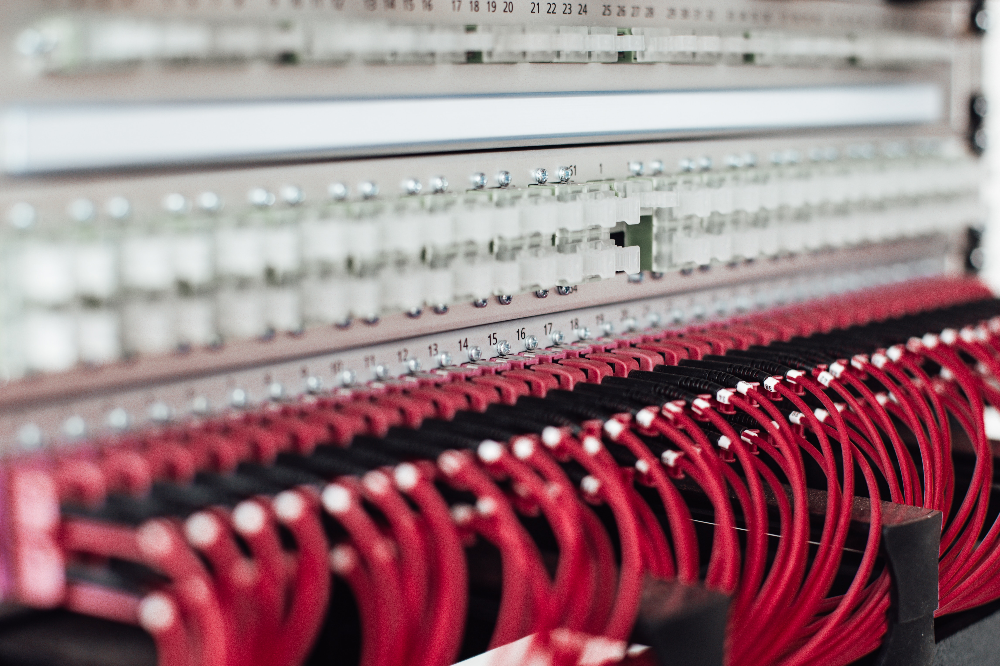
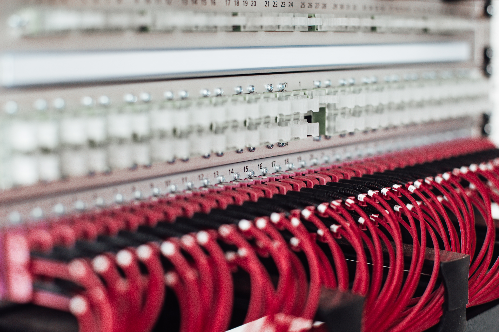

Información
1Origen
Las redes de computadoras surgieron en los años 60 como una solución para compartir recursos y comunicarse entre computadoras. Su infraestructura se basa en dispositivos como routers, switches y cables, permitiendo la transferencia de datos y la interconexión global de sistemas y usuarios.
2Antecedentes
Antes del surgimiento de las redes de computadoras, los sistemas informáticos se basaban en arquitecturas centralizadas. Con el desarrollo de la conmutación de paquetes y el uso de protocolos de comunicación, se sentaron las bases para la infraestructura descentralizada de las redes actuales. La creación de ARPANET en los años 60 y su evolución hacia Internet sentaron los cimientos para la interconexión global de sistemas y la expansión de las redes de computadoras.
3Historia
Las redes de computadoras surgieron en los años 60 con el desarrollo de ARPANET, un proyecto del Departamento de Defensa de Estados Unidos. Con el tiempo, ARPANET evolucionó hacia Internet, una red global que revolucionó la comunicación y el intercambio de información. El avance de estándares de comunicación, como TCP/IP, permitió la interoperabilidad entre diferentes sistemas. Las redes de computadoras se expandieron rápidamente, conectando personas, organizaciones y dispositivos en todo el mundo, transformando la sociedad y facilitando el acceso a recursos y servicios digitales.
4Objetivo
El objetivo de las redes de computadoras es permitir la interconexión y comunicación eficiente entre sistemas y usuarios, facilitando el intercambio de información y recursos digitales a nivel local y global.
Actualidad
En la actualidad, las redes de computadoras y su infraestructura juegan un papel fundamental en nuestra sociedad digital. La creciente dependencia de la conectividad ha impulsado avances significativos en la velocidad, capacidad y seguridad de las redes.
La implementación del 5G ha llevado las redes inalámbricas a un nivel superior, permitiendo velocidades de descarga y carga más rápidas, menor latencia y mayor capacidad de conexión de dispositivos. Esto ha abierto nuevas posibilidades en áreas como la conducción autónoma, el Internet de las cosas industrial y la realidad virtual y aumentada.
La computación en la nube ha transformado la forma en que almacenamos, accedemos y procesamos datos. Con servicios como el almacenamiento en la nube y el cómputo distribuido, las redes de computadoras permiten una mayor flexibilidad, escalabilidad y colaboración en entornos empresariales y personales.
La seguridad de las redes ha adquirido una importancia cada vez mayor. Con la proliferación de ciberataques y el aumento de la privacidad de los datos, se ha puesto un mayor énfasis en la protección de la infraestructura de red. Se han desarrollado tecnologías avanzadas de seguridad, como el cifrado, la autenticación de dos factores y los sistemas de detección de intrusiones, para salvaguardar la integridad y confidencialidad de la información transmitida a través de las redes.
Además, la expansión del Internet de las cosas (IoT) ha llevado a un aumento significativo en la cantidad de dispositivos conectados a las redes de computadoras. Desde electrodomésticos inteligentes hasta sensores industriales, la infraestructura de red ha tenido que adaptarse para manejar el enorme volumen de datos generados por estos dispositivos, y garantizar su interconexión y funcionamiento sin problemas.
En resumen, las redes de computadoras y su infraestructura se encuentran en constante evolución para satisfacer las demandas de una sociedad cada vez más conectada. Con avances en velocidad, capacidad, seguridad y conectividad, estas redes continúan transformando la forma en que vivimos, trabajamos y nos relacionamos en el mundo digital actual.
Tecnología
El uso de la tecnología en las redes de computadoras y su infraestructura es amplio y diverso, y tiene un impacto significativo en su rendimiento, seguridad y funcionalidad.
- Protocolos de red: Los protocolos como TCP/IP, Ethernet, Wi-Fi, MPLS (Multiprotocol Label Switching) y BGP (Border Gateway Protocol) son fundamentales para establecer la comunicación y la transferencia de datos entre dispositivos en una red. Estos protocolos definen las reglas y los estándares que permiten el enrutamiento, la segmentación de datos, la detección y corrección de errores, y otros aspectos de la comunicación en red.
- Dispositivos de red: Los dispositivos como routers, switches, hubs, firewalls y puntos de acceso inalámbrico son esenciales para crear y gestionar una infraestructura de red. Estos dispositivos se utilizan para enrutar y conmutar los paquetes de datos, segmentar y controlar el flujo de tráfico, proporcionar seguridad y filtrar el tráfico no deseado.
- Seguridad de red: Con el aumento de los ataques cibernéticos, la seguridad de red se ha vuelto crucial. Se utilizan tecnologías como firewalls, sistemas de prevención de intrusiones (IPS), sistemas de detección de anomalías y cifrado para proteger las redes y los datos contra amenazas externas e internas. Además, se implementan soluciones de autenticación y autorización, como VPN (Virtual Private Network) y autenticación de dos factores, para garantizar la integridad y confidencialidad de los datos transmitidos.
- Virtualización de redes: La virtualización de redes permite crear múltiples redes virtuales (VLAN) en una infraestructura física compartida. Esto proporciona aislamiento y seguridad, así como una gestión más eficiente de los recursos de red. Además, la virtualización de funciones de red (NFV) permite desplegar servicios de red como enrutadores y firewalls en forma de software en lugar de hardware dedicado, lo que ofrece flexibilidad y escalabilidad.
- Computación en la nube: La infraestructura de red se integra con servicios en la nube, como IaaS (Infrastructure as a Service), PaaS (Platform as a Service) y SaaS (Software as a Service), para proporcionar recursos de almacenamiento, cómputo y aplicaciones bajo demanda. Esto permite una mayor escalabilidad, agilidad y accesibilidad de los servicios, y reduce la necesidad de mantener una infraestructura local costosa.
- Tecnologías inalámbricas: Las redes inalámbricas, como Wi-Fi, Bluetooth, Zigbee y LTE (Long-Term Evolution), han ganado popularidad en entornos domésticos, empresariales y públicos. Estas tecnologías permiten la conectividad sin cables, brindando movilidad, flexibilidad y accesibilidad en dispositivos como computadoras portátiles, teléfonos inteligentes, tabletas y dispositivos IoT.
Galería

 



Estadisticas:

Crecimiento de dispositivos conectados
| Área | Estimación |
|---|---|
| Internet de las cosas (IoT) | Para 2025, se espera que haya alrededor de 30.9 mil millones de dispositivos IoT conectados a nivel mundial. |
| Automatización del hogar | Se espera que para 2025, haya alrededor de 1.8 mil millones de hogares con sistemas de automatización del hogar. |
| Vehículos conectados | Se estima que para 2026, más del 75% de los automóviles nuevos vendidos en todo el mundo estarán equipados con conectividad a Internet. |
| Dispositivos móviles | Para 2025, se espera que haya más de 7.4 mil millones de usuarios de teléfonos inteligentes en todo el mundo. |
| Industria 4.0 | Para 2025, se espera que haya más de 55.6 mil millones de dispositivos conectados utilizados en aplicaciones industriales. |
| Dispositivos vestibles | Se estima que para 2022, habrá más de 1.1 mil millones de dispositivos vestibles en uso en todo el mundo. |

Usuarios de internet
| Continente | Número de Usuarios de Internet |
|---|---|
| Asia | 2.6 mil millones |
| Europa | 700 millones |
| África | 525 millones |
| América | 706 millones |
| Oceanía | 30 millones |
| País | Número de Usuarios de Internet |
|---|---|
| China | 989 millones |
| India | 624 millones |
| Estados Unidos | 313 millones |
| Región | Tasa de Crecimiento (2010-2023) |
|---|---|
| África | 10% |
| América Latina | 40% |
| Asia | 45% |

Uso de redes sociales
| Red Social | Número de Usuarios (aproximado) |
|---|---|
| 2.8 mil millones | |
| YouTube | 2 mil millones |
| 2 mil millones | |
| 1.2 mil millones | |
| 330 millones | |
| 760 millones | |
| Snapchat | 500 millones |
| TikTok | 1 mil millones |
Futuro
1Mayor velocidad y capacidad
Se espera que las redes de computadoras sigan mejorando en términos de velocidad y capacidad. Con el despliegue de tecnologías como el 5G, se espera un aumento significativo en la velocidad de conexión y la capacidad de transferencia de datos
2Mayor conectividad
A medida que la tecnología avance, se espera que más dispositivos estén conectados a las redes de computadoras. El Internet de las cosas (IoT) continuará creciendo, con más dispositivos y sensores conectados para recopilar datos y permitir la automatización en diversos sectores
3Expansión de la computación en la nube
La computación en la nube seguirá siendo una parte integral de las redes de computadoras. Se espera un mayor crecimiento de servicios en la nube, como IaaS (Infraestructura como Servicio), PaaS (Plataforma como Servicio) y SaaS (Software como Servicio)
4Mejoras en la segurida
Dado el aumento constante de las amenazas cibernéticas, se espera que se desarrollen y adopten soluciones de seguridad más avanzadas en las redes de computadoras. Esto incluye tecnologías como la inteligencia artificial y el aprendizaje automático para detectar y mitigar ataques, así como el desarrollo de estándares de seguridad más sólidos para proteger la privacidad y la integridad de los datos.
5Mayor enfoque en la privacidad
A medida que la conciencia sobre la privacidad de los datos aumenta, se espera que las redes de computadoras y su infraestructura se adapten para garantizar una mayor protección de la privacidad.
6Avances en la inteligencia de red
Se espera que las redes de computadoras sean más inteligentes y adaptables en el futuro. Esto implica la implementación de tecnologías de inteligencia de red, como la automatización, el aprendizaje automático y la toma de decisiones basada en datos
Educativo
1Ingeniería de redes:
Esta especialización se enfoca en el diseño, implementación y gestión de redes de computadoras. Aprenderás sobre los fundamentos de las redes, protocolos de comunicación, enrutamiento, conmutación, seguridad de red y administración de sistemas.
2Seguridad de redes
Dado el creciente panorama de amenazas cibernéticas, la seguridad de red es una especialización en alta demanda. Te proporcionará conocimientos y habilidades para proteger las redes de computadoras contra ataques, implementar soluciones de seguridad, realizar análisis de riesgos y gestionar incidentes de seguridad.
3Administración de sistemas de red
Esta especialización se centra en la gestión y administración de la infraestructura de red. Aprenderás a configurar y mantener dispositivos de red, monitorear el rendimiento de la red, solucionar problemas y garantizar la disponibilidad y confiabilidad de los servicios de red.
4Virtualización y computación en la nube
Con el auge de la virtualización y la computación en la nube, esta especialización te brindará conocimientos sobre cómo diseñar, implementar y administrar entornos virtualizados y servicios en la nube. Aprenderás sobre la virtualización de redes, la gestión de recursos en la nube y la integración de servicios en la infraestructura de red.
5Arquitectura de redes
Esta especialización se centra en el diseño y planificación de arquitecturas de redes escalables y eficientes. Aprenderás sobre la selección de tecnologías de red, el diseño de topologías, la optimización del rendimiento y la planificación de la capacidad de red.
Laboral

1Administrador de redes
Los administradores de redes son responsables de configurar, mantener y gestionar la infraestructura de red de una organización. Esto implica el monitoreo del rendimiento de la red, la resolución de problemas, la implementación de mejoras de red, la seguridad de la red y la administración de los recursos de red.
2Ingeniero de redes
Los ingenieros de redes se enfocan en el diseño y la implementación de redes de computadoras. Trabajan en proyectos de infraestructura de red, diseñando topologías de red, seleccionando y configurando equipos de red, y asegurándose de que la red cumpla con los requisitos de rendimiento y seguridad.
3Especialista en seguridad de redes
Los especialistas en seguridad de redes se concentran en proteger la infraestructura de red contra amenazas y vulnerabilidades. Su trabajo implica la implementación de medidas de seguridad, como firewalls, sistemas de detección y prevención de intrusiones, cifrado de datos y políticas de seguridad de red.
4Arquitecto de redes
Los arquitectos de redes diseñan y planifican la infraestructura de red de alto nivel de una organización. Consideran los requisitos de negocio, la escalabilidad, el rendimiento y la seguridad para crear una arquitectura de red eficiente y confiable
5Consultor de redes
Los consultores de redes brindan asesoramiento y soluciones a organizaciones que desean mejorar o actualizar su infraestructura de red. Realizan evaluaciones de red, identifican áreas de mejora, diseñan soluciones personalizadas y ayudan en la implementación y configuración de nuevos sistemas y tecnologías de red.
Redes Sociales:
En Reddit, puedes encontrar comunidades (subreddits) dedicadas a la informática y redes de computadoras, como r/networking, r/ccna y r/sysadmin. Estos subreddits son excelentes lugares para hacer preguntas, obtener consejos y discutir temas relacionados con las redes.

LinkedIn es una plataforma profesional que cuenta con grupos y comunidades centradas en temas de tecnología y redes. Puedes unirte a grupos relevantes, seguir a expertos en redes y participar en discusiones relacionadas con el campo de las redes de computadoras.

Quora
Quora es una plataforma de preguntas y respuestas donde puedes encontrar una gran cantidad de preguntas y respuestas relacionadas con las redes de computadoras. Puedes seguir etiquetas relacionadas con redes, explorar preguntas y respuestas existentes, y hacer tus propias preguntas.

Twitter es una plataforma de microblogging donde puedes seguir a expertos en redes de computadoras, empresas y organizaciones dedicadas a la tecnología. Muchos profesionales de redes comparten información útil, noticias y consejos sobre redes en sus tweets.
Reddit para opiniones e información de networking
FAQ's
-
¿Qué es una red de computadoras?
Una red de computadoras es un sistema de dispositivos interconectados que comparten recursos y permiten la comunicación entre ellos.
-
¿Cuáles son los beneficios de tener una red de computadoras?
Algunos beneficios incluyen compartir archivos y recursos, como impresoras, y facilitar la comunicación entre usuarios.
-
¿Cuáles son los tipos más comunes de redes de computadoras?
Las redes más comunes son LAN (red de área local), WAN (red de área amplia) e Internet.
-
¿Qué es una LAN?
Una LAN es una red de computadoras que abarca un área limitada, como una casa, una oficina o un edificio.
-
¿Qué es una WAN?
Una WAN es una red de computadoras que abarca un área extensa, como una ciudad, un país o incluso varios países.
-
¿Qué es un enrutador?
Un enrutador es un dispositivo de red que permite la conexión entre diferentes redes y dirige el tráfico de datos.
-
¿Qué es un switch?
Un switch es un dispositivo de red que conecta múltiples dispositivos en una red local y permite la comunicación entre ellos.
-
¿Qué es un protocolo de red?
Un protocolo de red es un conjunto de reglas y estándares que define cómo se realiza la comunicación entre dispositivos en una red.
-
¿Qué es una dirección IP?
Una dirección IP es una serie única de números que identifica a un dispositivo en una red.
-
¿Qué es DHCP?
DHCP (Protocolo de configuración dinámica de host) es un protocolo que asigna automáticamente direcciones IP a los dispositivos en una red.
-
¿Qué es DNS?
DNS (Sistema de nombres de dominio) es un sistema que traduce nombres de dominio legibles para los humanos en direcciones IP.
-
¿Qué es un firewall?
Un firewall es una medida de seguridad que controla el tráfico de red, permitiendo o bloqueando ciertos tipos de comunicación.
-
¿Qué es el ancho de banda de una red?
El ancho de banda de una red es la cantidad de datos que pueden transmitirse en un período de tiempo determinado.
-
¿Cuál es la diferencia entre una red cableada e inalámbrica?
Una red cableada utiliza cables físicos para conectar los dispositivos, mientras que una red inalámbrica utiliza ondas de radio para la comunicación.
-
¿Qué es un punto de acceso inalámbrico?
Un punto de acceso inalámbrico es un dispositivo que permite la conexión de dispositivos inalámbricos a una red cableada.
-
¿Qué es un VPN?
Una VPN (Red Privada Virtual) es una conexión segura que permite acceder a una red privada a través de una red pública, como Internet.
-
¿Qué es el cifrado de datos en una red?
El cifrado de datos es un proceso de codificación que protege la información transmitida en una red, haciéndola ilegible para usuarios no autorizados.
-
¿Qué es un ataque de denegación de servicio (DDoS)?
Un ataque DDoS es cuando múltiples dispositivos intentan sobrecargar un servidor o una red con tráfico, causando una interrupción en los servicios.
-
¿Qué es una dirección MAC?
Una dirección MAC es un identificador único y físico asignado a cada dispositivo de red.
-
¿Qué es una topología de red?
La topología de red se refiere al diseño físico o lógico de una red, incluyendo cómo están conectados los dispositivos.
-
¿Qué es un servidor de archivos?
Un servidor de archivos es un dispositivo o software que almacena y comparte archivos en una red.
-
¿Qué es un servidor web?
Un servidor web es un dispositivo o software que almacena y distribuye sitios web a través de Internet.
-
¿Qué es una dirección IP pública y privada?
Una dirección IP pública es la dirección asignada a un dispositivo en Internet, mientras que una dirección IP privada es utilizada en una red local.
-
¿Qué es un proxy?
Un proxy es un servidor intermedio que actúa como intermediario entre los dispositivos de una red y los servidores externos, mejorando la seguridad y el rendimiento.
-
¿Qué es el cableado estructurado?
El cableado estructurado se refiere a la instalación de cables y componentes según estándares específicos para crear una red de alta calidad y rendimiento.